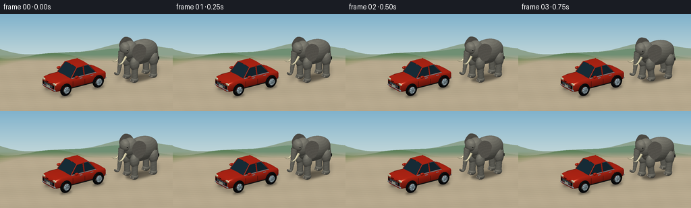
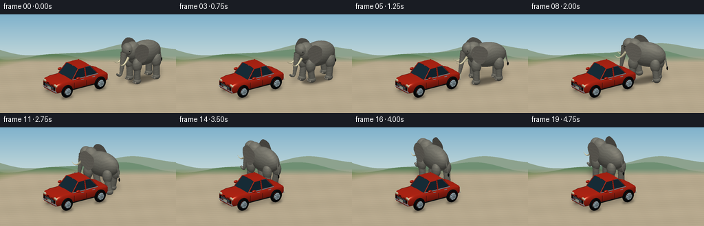

CODING AGENTS AS PIXEL WORLD MODELS
traex/GPT-6.1-Sol · dynamic_spatial_relationship_0064
点击播放 · 原生 RGB 像素
逐轮保存的候选
回放视频、检查图与代码变化。
每份候选均可单独播放。实际图片检查记录在下方工具轨迹中。
候选 01播放与检查图
点击播放 · 原生 RGB 像素


展开代码变化
--- 上一保存版本
+++ 本次保存版本
@@ -0,0 +1,318 @@
+import math, json
+from pathlib import Path
+import numpy as np
+from PIL import Image, ImageDraw, ImageFilter
+from artifact_io import save
+
+ROOT=Path(__file__).resolve().parent
+SPEC=json.loads((ROOT/'task_spec.json').read_text())
+W,H=SPEC['width'],SPEC['height']; SS=3; WW,HH=W*SS,H*SS
+# An original mathematical scene, rendered by a small numpy triangle rasterizer.
+TARGET=np.array([1.5,.75,1.25]); EYE=np.array([-8.,-13.,8.0]);
+VIEW=(TARGET-EYE); VIEW/=np.linalg.norm(VIEW)
+RIGHT=np.cross(VIEW,[0,0,1.]); RIGHT/=np.linalg.norm(RIGHT)
+UP=np.cross(RIGHT,VIEW)
+SCALE=21.7*SS
+LIGHT=np.array([-3.,-4.,8.]); LIGHT/=np.linalg.norm(LIGHT)
+MATS={
+ 'skin':((.49,.485,.445),.05,16), 'ear':((.46,.447,.412),.03,14),
+ 'ivory':((.87,.84,.69),.22,40), 'black':((.018,.023,.025),.2,48),
+ 'rubber':((.043,.05,.057),.03,16),'rim':((.63,.69,.72),.65,70),
+ 'paint':((.68,.14,.078),.68,80),'glass':((.085,.17,.215),.75,100),
+ 'chrome':((.52,.60,.63),.9,95),'red':((.64,.025,.017),.35,45),
+ 'lamp':((.87,.87,.72),.45,40),'trim':((.065,.073,.074),.12,22),
+ 'white':((.88,.86,.75),.05,15), 'nail':((.57,.55,.50),.04,16)
+}
+
+def proj(v):
+ q=np.asarray(v)-TARGET
+ return np.stack([WW/2+q@RIGHT*SCALE, HH/2-q@UP*SCALE, q@VIEW],axis=-1)
+
+class Mesh:
+ def __init__(self):self.parts=[]
+ def add(self,v,n,faces,mat):self.parts.append((np.array(v,float),np.array(n,float),np.array(faces,int),mat))
+ def sphere(self,c,r,mat='skin',nu=30,nv=18):
+ v=[];n=[]
+ for j in range(nv+1):
+ phi=math.pi*j/nv
+ for i in range(nu):
+ a=2*math.pi*i/nu; u=np.array([math.sin(phi)*math.cos(a),math.sin(phi)*math.sin(a),math.cos(phi)])
+ v.append(np.array(c)+u*np.array(r)); nn=u/np.array(r);n.append(nn/np.linalg.norm(nn))
+ faces=[]
+ for j in range(nv):
+ for i in range(nu):
+ a=j*nu+i;b=j*nu+(i+1)%nu;d=(j+1)*nu+i;e=(j+1)*nu+(i+1)%nu
+ faces.extend([[a,d,b],[b,d,e]])
+ self.add(v,n,faces,mat)
+ def patch(self,grid,mat):
+ g=np.array(grid,float); ny,nx=g.shape[:2]; norms=np.zeros_like(g);faces=[]
+ for j in range(ny-1):
+ for i in range(nx-1):
+ a=j*nx+i;b=a+1;c=a+nx;d=c+1
+ faces.extend([[a,b,c],[b,d,c]])
+ v=g.reshape(-1,3);n=norms.reshape(-1,3)
+ for f in faces:
+ nn=np.cross(v[f[1]]-v[f[0]],v[f[2]]-v[f[0]])
+ for i in f:n[i]+=nn
+ n/=np.maximum(np.linalg.norm(n,axis=1,keepdims=True),1e-10)
+ self.add(v,n,faces,mat)
+ def quad(self,vs,mat):
+ a,b,c,d=np.array(vs,float);n=np.cross(b-a,c-a);n/=np.linalg.norm(n)
+ self.add([a,b,c,d],[n]*4,[[0,1,2],[0,2,3]],mat)
+ def tube(self,points,radii,mat='skin',sides=14):
+ ps=np.array(points,float);vs=[];ns=[];fs=[]
+ for j,p in enumerate(ps):
+ tan=ps[min(j+1,len(ps)-1)]-ps[max(j-1,0)];tan/=np.linalg.norm(tan)
+ ref=np.array([0.,1.,0.]) if abs(tan[1])<.9 else np.array([1.,0.,0.])
+ a=np.cross(tan,ref);a/=np.linalg.norm(a);b=np.cross(tan,a)
+ for i in range(sides):
+ ang=i*2*math.pi/sides;n=a*math.cos(ang)+b*math.sin(ang)
+ vs.append(p+n*radii[j]);ns.append(n)
+ for j in range(len(ps)-1):
+ for i in range(sides):
+ a=j*sides+i;b=j*sides+(i+1)%sides;c=a+sides;d=b+sides
+ fs.extend([[a,b,c],[b,d,c]])
+ for end in [0,len(ps)-1]:
+ center=len(vs);vs.append(ps[end]);ns.append([0,0,1])
+ for i in range(sides):fs.append([center,end*sides+i,end*sides+(i+1)%sides])
+ self.add(vs,ns,fs,mat)
+ def transform(self,theta,pos,scale=1):
+ c,s=math.cos(theta),math.sin(theta); R=np.array([[c,-s,0],[s,c,0],[0,0,1]])
+ self.parts=[(v@R.T*scale+pos,n@R.T,f,m)for v,n,f,m in self.parts]
+
+def render(mesh,img,depth):
+ for verts,norms,faces,mat in mesh.parts:
+ pr=proj(verts);color,ks,power=MATS[mat];col=np.array(color)
+ for inds in faces:
+ p=pr[inds]; xmin=max(0,int(np.floor(p[:,0].min())));xmax=min(WW-1,int(np.ceil(p[:,0].max())))
+ ymin=max(0,int(np.floor(p[:,1].min())));ymax=min(HH-1,int(np.ceil(p[:,1].max())))
+ if xmin>xmax or ymin>ymax:continue
+ a,b,c=p;den=(b[1]-c[1])*(a[0]-c[0])+(c[0]-b[0])*(a[1]-c[1])
+ if abs(den)<1e-7:continue
+ yy,xx=np.mgrid[ymin:ymax+1,xmin:xmax+1];xx=xx+.5;yy=yy+.5
+ wa=((b[1]-c[1])*(xx-c[0])+(c[0]-b[0])*(yy-c[1]))/den
+ wb=((c[1]-a[1])*(xx-c[0])+(a[0]-c[0])*(yy-c[1]))/den;wc=1-wa-wb
+ zz=wa*a[2]+wb*b[2]+wc*c[2];dst=depth[ymin:ymax+1,xmin:xmax+1]
+ mask=(wa>=-1e-5)&(wb>=-1e-5)&(wc>=-1e-5)&(zz<dst)
+ if not mask.any():continue
+ ww=np.stack([wa[mask],wb[mask],wc[mask]],1); nn=ww@norms[inds];nn/=np.maximum(np.linalg.norm(nn,axis=1)[:,None],1e-8)
+ # Two-sided materials with smooth lighting.
+ facing=nn@(-VIEW); nn=np.where((facing<0)[:,None],-nn,nn)
+ diffuse=np.maximum(0,nn@LIGHT);up=nn[:,2]
+ illumination=.49+.48*diffuse+.055*up
+ world=ww@verts[inds]
+ texture=np.ones(len(world))
+ if mat in ('skin','ear'):
+ x,y,z=world.T
+ grain=np.sin(x*57+np.sin(z*32)*2.7)*np.sin(y*63+z*11)*np.sin(z*51+x*9)
+ wrinkles=np.sin(z*31+3*np.sin(x*4)+1.5*np.sin(y*8))
+ texture=.97+.052*grain+.022*wrinkles
+ elif mat=='rubber':texture=.95+.04*np.sin(world[:,0]*90+world[:,2]*85)
+ half=LIGHT-VIEW;half/=np.linalg.norm(half)
+ spec=np.maximum(0,nn@half)**power*ks
+ rgb=col[None,:]*illumination[:,None]*texture[:,None]+spec[:,None]*np.array([1.,.92,.78])
+ if mat=='glass':
+ fres=(1-np.abs(nn@(-VIEW)))**3
+ rgb+=fres[:,None]*np.array([.23,.32,.36])
+ rgb=np.clip(rgb*255,0,255)
+ region=img[ymin:ymax+1,xmin:xmax+1];region[mask]=rgb;dst[mask]=zz[mask]
+
+def car_mesh():
+ m=Mesh()
+ # Rounded sheet-metal hull built from longitudinal sections.
+ sections=[(-2.15,.73,.91),(-2.0,.87,1.05),(-1.55,.90,1.12),(-.85,.90,1.12),(.15,.90,1.13),(1.1,.89,1.12),(1.85,.84,1.04),(2.08,.74,.92)]
+ grids=[]
+ for x,w,z in sections:
+ grids.append([[x,-w*.87,.40],[x,-w,.56],[x,-w,.86],[x,-w*.92,z-.035],[x,-w*.72,z],[x,0,z+.025],[x,w*.72,z],[x,w*.92,z-.035],[x,w,.86],[x,w,.56],[x,w*.87,.40]])
+ m.patch(grids,'paint')
+ for k in [0,-1]:m.quad([grids[k][0],grids[k][-1],grids[k][7],grids[k][3]],'paint')
+ # Hood, cabin, and trunk.
+ m.quad([[-.87,-.78,1.13],[-.29,-.67,1.78],[-.29,.67,1.78],[-.87,.78,1.13]],'glass')
+ m.quad([[.66,.67,1.76],[.66,-.67,1.76],[1.24,-.78,1.13],[1.24,.78,1.13]],'glass')
+ roof=[]
+ for x in np.linspace(-.31,.69,10):
+ roof.append([[x,y,1.79+.045*(1-(y/.69)**2)-.025*((x-.1)/.7)**2]for y in np.linspace(-.69,.69,15)])
+ m.patch(roof,'paint')
+ for side in [-1,1]:
+ y=side*.82
+ # Side glazing split by a painted B pillar.
+ m.quad([[-.79,y,1.16],[-.27,side*.69,1.74],[.18,side*.69,1.75],[.18,y,1.16]],'glass')
+ m.quad([[.28,y,1.16],[.28,side*.69,1.75],[.64,side*.69,1.74],[1.15,y,1.16]],'glass')
+ for p,q in [([-.86,side*.81,1.12],[-.30,side*.69,1.78]),([.68,side*.69,1.78],[1.25,side*.81,1.12]),([.22,side*.83,1.12],[.22,side*.69,1.78])]:m.tube([p,q],[.031,.029],'paint',8)
+ m.tube([[-.84,y,1.12],[1.22,y,1.12]],[.026,.026],'chrome',8)
+ # Panel seams and handles.
+ for x in [-.75,.24,1.16]:m.tube([[x,side*.904,.52],[x,side*.912,.97]],[.008,.008],'trim',6)
+ for x in [-.09,.82]:
+ m.tube([[x-.10,side*.914,1.025],[x+.10,side*.914,1.025]],[.025,.025],'chrome',8)
+ m.tube([[-1.04,side*.915,.47],[1.12,side*.915,.47]],[.035,.035],'trim',8)
+ # Mirror on stem.
+ m.tube([[-.65,side*.79,1.23],[-.58,side*1.04,1.23]],[.035,.035],'trim',8)
+ m.sphere([-.57,side*1.08,1.26],[.16,.10,.09],'paint',18,10)
+ for x in [-1.34,1.35]:
+ # Rubber torus with its axis across the car.
+ vs=[];ns=[];fs=[];R=.355;r=.095
+ for j in range(32):
+ a=j*2*math.pi/32
+ for i in range(12):
+ b=i*2*math.pi/12
+ vs.append([x+(R+r*math.cos(b))*math.cos(a),side*.895+r*math.sin(b),.445+(R+r*math.cos(b))*math.sin(a)])
+ ns.append([math.cos(b)*math.cos(a),math.sin(b),math.cos(b)*math.sin(a)])
+ for j in range(32):
+ for i in range(12):
+ a=j*12+i;b=j*12+(i+1)%12;c=((j+1)%32)*12+i;d=((j+1)%32)*12+(i+1)%12;fs.extend([[a,b,c],[b,d,c]])
+ m.add(vs,ns,fs,'rubber')
+ yy=side*.99
+ m.tube([[x,yy,.445],[x,yy+side*.012,.445]],[.285,.285],'trim',32)
+ m.tube([[x,yy+side*.014,.445],[x,yy+side*.022,.445]],[.245,.245],'rim',32)
+ for a in np.linspace(0,2*math.pi,8,endpoint=False):
+ m.tube([[x+.08*math.cos(a),yy+side*.032,.445+.08*math.sin(a)],[x+.224*math.cos(a+.10),yy+side*.032,.445+.224*math.sin(a+.10)]],[.025,.035],'chrome',6)
+ m.sphere([x,yy+side*.033,.445],[.083,.022,.083],'chrome',16,10)
+ # Front fascia, lights and license plate; front is the left end of the image.
+ m.quad([[-2.16,-.69,.58],[-2.16,.69,.58],[-2.16,.69,.81],[-2.16,-.69,.81]],'trim')
+ for z in [.63,.70,.77]:m.tube([[-2.18,-.49,z],[-2.18,.49,z]],[.012,.012],'chrome',8)
+ for side in [-1,1]:
+ m.sphere([-2.10,side*.63,.91],[.045,.20,.10],'lamp',20,10)
+ m.sphere([2.035,side*.58,.86],[.045,.21,.09],'red',20,10)
+ m.tube([[-2.13,-.76,.49],[-2.13,.76,.49]],[.045,.045],'chrome',10)
+ m.tube([[2.10,-.73,.48],[2.10,.73,.48]],[.045,.045],'chrome',10)
+ m.quad([[-2.19,-.20,.54],[-2.19,.20,.54],[-2.19,.20,.69],[-2.19,-.20,.69]],'white')
+ return m
+
+def elephant_mesh(t,walking):
+ m=Mesh();phase=t*2*math.pi*1.2
+ bob=.035*math.sin(phase*2)*walking
+ m.sphere([-.13,0,2.05+bob],[1.38,.69,.92],nu=44,nv=26)
+ m.sphere([.88,0,2.40+bob],[.63,.53,.71],nu=36,nv=24)
+ m.sphere([1.27,0,2.61+bob],[.43,.45,.48],nu=32,nv=20)
+ # Slow alternating weight-bearing legs, with bent knees and swinging feet.
+ for x in [-.89,.77]:
+ for side in [-1,1]:
+ offset=(0 if (x>0)==(side>0) else math.pi)
+ a=phase+offset;swing=.19*math.sin(a)*walking;lift=.15*max(0,math.cos(a))*walking
+ yy=side*.47
+ m.sphere([x,yy,1.43+bob],[.37,.31,.54],nu=24,nv=16)
+ m.tube([[x,yy,1.52+bob],[x+swing*.4,yy,.80+lift*.4],[x+swing,yy,.28+lift]],[.28,.235,.235],sides=20)
+ m.sphere([x+swing,yy,.23+lift],[.29,.265,.245],nu=24,nv=14)
+ for q in [-.15,0,.15]:m.sphere([x+swing+.244,yy+q,.15+lift],[.06,.063,.087],'nail',12,8)
+ # Large thin folded ears, with a subtly rippling scalloped edge.
+ outline=np.array([[1.12,2.91],[.76,3.13],[.27,2.94],[.00,2.55],[.10,2.08],[.40,1.72],[.77,1.77],[1.12,2.18],[1.25,2.58]])
+ for side in [-1,1]:
+ anchor=np.array([1.02,2.52]);vs=[];ns=[];fs=[];N=len(outline)*4
+ # interpolate perimeter with a periodic cubic Catmull-Rom spline
+ perimeter=[]
+ for k in range(N):
+ j=k//4;u=(k%4)/4; p0=outline[(j-1)%len(outline)];p1=outline[j];p2=outline[(j+1)%len(outline)];p3=outline[(j+2)%len(outline)]
+ perimeter.append(.5*((2*p1)+(-p0+p2)*u+(2*p0-5*p1+4*p2-p3)*u*u+(-p0+3*p1-3*p2+p3)*u*u*u))
+ for j in range(9):
+ r=j/8
+ for k,p in enumerate(perimeter):
+ x,z=anchor*(1-r)+p*r
+ y=side*(.47+.40*math.sin(r*math.pi*.64)+.028*math.sin(k*.9+phase)*r*walking)
+ vs.append([x,y,z+bob]);ns.append([-.12,side*.96,.1])
+ for j in range(8):
+ for k in range(N):
+ a=j*N+k;b=j*N+(k+1)%N;c=a+N;d=b+N;fs.extend([[a,b,c],[b,d,c]])
+ m.add(vs,ns,fs,'ear')
+ # Upper eyelid and very small glossy eye, ahead of the ear.
+ m.sphere([1.37,side*.40,2.63+bob],[.085,.055,.071],nu=18,nv=12)
+ m.sphere([1.405,side*.441,2.638+bob],[.038,.025,.034],'black',16,10)
+ m.sphere([1.414,side*.459,2.65+bob],[.008,.005,.008],'white',10,6)
+ pts=[]
+ for u in np.linspace(0,1,18):pts.append([1.40+.85*u,side*(.29+.055*u),2.12+bob-.48*math.sin(u*math.pi*.78)])
+ m.tube(pts,np.linspace(.095,.008,18),'ivory',14)
+ # Long tapered trunk with transverse folds and a gently curled tip.
+ pts=[];rads=[]
+ for j in range(32):
+ u=j/31
+ x=1.58+.35*u+.28*max(0,(u-.74)/.26)**2
+ z=2.43-2.0*u+.47*max(0,(u-.78)/.22)**2+bob
+ y=.06*math.sin(phase+.7)*u*walking
+ pts.append([x,y,z]);rads.append((.25*(1-u)+.073*u)*(1+.032*math.sin(j*2.2)))
+ m.tube(pts,rads,sides=20)
+ # Tail and coarse tuft.
+ tail=[]
+ for u in np.linspace(0,1,12):tail.append([-1.43-.23*u,.08*math.sin(phase)*u*walking,2.24-1.04*u+bob])
+ m.tube(tail,np.linspace(.075,.024,12),sides=10)
+ m.sphere(tail[-1],[.063,.048,.14],'trim',16,10)
+ return m
+
+# Ground and distant countryside, painted only with procedural colors and geometry.
+def backdrop():
+ yy,xx=np.mgrid[0:HH,0:WW]; yf=yy/SS
+ top=np.array([128,178,204]);bot=np.array([211,225,221]);a=np.clip(yf/80,0,1)[...,None]
+ image=(top*(1-a)+bot*a).astype(np.uint8);im=Image.fromarray(image);d=ImageDraw.Draw(im)
+ # Soft distant rolling hills.
+ for baseline,amp,color,phase in [(52,8,(141,162,142),0),(59,7,(111,143,115),1),(66,6,(94,129,91),3)]:
+ points=[(x,int((baseline+amp*math.sin(x/WW*6+phase)+2*math.sin(x/WW*15))*SS))for x in range(WW)]
+ d.polygon(points+[(WW,HH),(0,HH)],fill=color)
+ # A level dusty lay-by, with a soft grass verge further from the camera.
+ image=np.array(im).astype(float)
+ # Map each pixel to the horizontal world plane using an orthographic ray.
+ a=(xx-WW/2)/SCALE;b=-(yy-HH/2)/SCALE
+ origins=TARGET+a[...,None]*RIGHT+b[...,None]*UP
+ dist=-origins[...,2]/VIEW[2];world=origins+dist[...,None]*VIEW
+ gx,gy=world[...,:2].transpose(2,0,1)
+ gravel=(np.sin(gx*34+gy*53)+np.sin(gx*109-gy*76)+np.sin(gx*9+gy*16))
+ large=np.sin(gx*.9+gy*1.7)+.4*np.sin(gx*4-gy*2)
+ base=np.stack([182+gravel*2.0+large*2.0,168+gravel*1.8+large*1.8,141+gravel*1.6+large*1.7],-1)
+ grass=np.stack([112+gravel*4,131+gravel*4,75+gravel*2],-1)
+ verge=np.clip((gy-6.0)*.55,0,1)
+ base=base*(1-verge[...,None])+grass*verge[...,None]
+ # horizon blend
+ blend=np.clip((yf-60)/10,0,1)[...,None]
+ image=image*(1-blend)+base*blend
+ return image,world
+
+def add_shadows(background,mesh,opacity=.15):
+ shadow=Image.new('L',(WW,HH),0);d=ImageDraw.Draw(shadow)
+ # Project the object's whole silhouette downwards along sunlight.
+ for vs,ns,fs,mat in mesh.parts:
+ if mat in ('nail','rim','chrome','lamp','white'):continue
+ v=vs.copy();v[:,:2]-=v[:,2,None]*(LIGHT[:2]/LIGHT[2]);v[:,2]=.015
+ p=proj(v)
+ for f in fs:d.polygon([(float(p[i,0]),float(p[i,1]))for i in f],fill=255)
+ shadow=shadow.filter(ImageFilter.GaussianBlur(3.0*SS))
+ s=np.asarray(shadow)/255*opacity
+ return background*(1-s[...,None])
+
+def contact(background,centers):
+ im=Image.new('L',(WW,HH),0);d=ImageDraw.Draw(im)
+ for x,y,rx,ry in centers:
+ pts=[]
+ for a in np.linspace(0,2*math.pi,48):
+ p=proj([x+rx*math.cos(a),y+ry*math.sin(a),.005]);pts.append(tuple(p[:2]))
+ d.polygon(pts,fill=110)
+ im=im.filter(ImageFilter.GaussianBlur(1.5*SS));s=np.asarray(im)/255
+ return background*(1-s[...,None])
+
+def trajectory(u):
+ # The elephant begins clearly on screen-right, then rounds the car's rear
+ # and comes to a stop beyond it, with the stationary car occluding it.
+ keys=np.array([[4.65,-1.10],[3.78,-.90],[2.87,.27],[2.32,1.72],[2.20,2.70]])
+ if u<=0:return keys[0],math.pi
+ if u>=1:return keys[-1],math.pi/2+.12
+ f=u*4;k=min(int(f),3);s=f-k
+ p0=keys[max(0,k-1)];p1=keys[k];p2=keys[k+1];p3=keys[min(4,k+2)]
+ p=.5*(2*p1+(-p0+p2)*s+(2*p0-5*p1+4*p2-p3)*s*s+(-p0+3*p1-3*p2+p3)*s*s*s)
+ v=.5*((-p0+p2)+2*(2*p0-5*p1+4*p2-p3)*s+3*(-p0+3*p1-3*p2+p3)*s*s)
+ return p,math.atan2(v[1],v[0])
+
+def main():
+ bg,_=backdrop();car=car_mesh();bg=add_shadows(bg,car,.20)
+ bg=contact(bg,[(x,y,.46,.20)for x in [-1.34,1.35]for y in [-.9,.9]])
+ car_img=np.zeros((HH,WW,3),float);car_depth=np.full((HH,WW),np.inf);render(car,car_img,car_depth);cm=np.isfinite(car_depth)
+ frames=[]
+ for i in range(SPEC['frames']):
+ t=i/SPEC['fps'];u=np.clip((i-2)/15,0,1)
+ pos,angle=trajectory(u);walking=1.0 if 2<=i<17 else 0.0
+ # ease into the walk and settle at the destination
+ if i==2 or i==16:walking=.55
+ elephant=elephant_mesh(t,walking);elephant.transform(angle,[pos[0],pos[1],0],.94)
+ img=add_shadows(bg,elephant,.18)
+ img=contact(img,[(pos[0],pos[1],1.10,.57)])
+ img[cm]=car_img[cm];depth=car_depth.copy();render(elephant,img,depth)
+ frame=Image.fromarray(np.clip(img,0,255).astype(np.uint8)).resize((W,H),Image.Resampling.LANCZOS)
+ frames.append(np.asarray(frame));print(f'Frame {i+1}/{SPEC["frames"]}',flush=True)
+ save(np.stack(frames),ROOT)
+
+if __name__=='__main__':main()
可观测工具轨迹
实际执行的命令与返回图片。
命令 1exit 0
/bin/bash -lc 'ls -la && cat prompt.txt && cat GENERATION_RULES.md && cat task_spec.json'
命令 2exit 0
/bin/bash -lc "cat artifact_io.py && python - <<'PY' import importlib.util for m in ['numpy','PIL','scipy']: print(m, bool(importlib.util.find_spec(m))) PY"
命令 3exit 0
/bin/bash -lc "cat > generate.py <<'PY'
import math, json
from pathlib import Path
import numpy as np
from PIL import Image, ImageDraw, ImageFilter
from artifact_io import save
ROOT=Path(__file__).resolve().parent
SPEC=json.loads((ROOT/'task_spec.json').read_text())
W,H=SPEC['width'],SPEC['height']; SS=3; WW,HH=W*SS,H*SS
# An original mathematical scene, rendered by a small numpy triangle rasterizer.
TARGET=np.array([1.5,.75,1.25]); EYE=np.array([-8.,-13.,8.0]);
VIEW=(TARGET-EYE); VIEW/=np.linalg.norm(VIEW)
RIGHT=np.cross(VIEW,[0,0,1.]); RIGHT/=np.linalg.norm(RIGHT)
UP=np.cross(RIGHT,VIEW)
SCALE=21.7*SS
LIGHT=np.array([-3.,-4.,8.]); LIGHT/=np.linalg.norm(LIGHT)
MATS={
'skin':((.49,.485,.445),.05,16), 'ear':((.46,.447,.412),.03,14),
'ivory':((.87,.84,.69),.22,40), 'black':((.018,.023,.025),.2,48),
'rubber':((.043,.05,.057),.03,16),'rim':((.63,.69,.72),.65,70),
'paint':((.68,.14,.078),.68,80),'glass':((.085,.17,.215),.75,100),
'chrome':((.52,.60,.63),.9,95),'red':((.64,.025,.017),.35,45),
'lamp':((.87,.87,.72),.45,40),'trim':((.065,.073,.074),.12,22),
'white':((.88,.86,.75),.05,15), 'nail':((.57,.55,.50),.04,16)
}
def proj(v):
q=np.asarray(v)-TARGET
return np.stack([WW/2+q@RIGHT*SCALE, HH/2-q@UP*SCALE, q@VIEW],axis=-1)
class Mesh:
def __init__(self):self.parts=[]
def add(self,v,n,faces,mat):self.parts.append((np.array(v,float),np.array(n,float),np.array(faces,int),mat))
def sphere(self,c,r,mat='skin',nu=30,nv=18):
v=[];n=[]
for j in range(nv+1):
phi=math.pi*j/nv
for i in range(nu):
a=2*math.pi*i/nu; u=np.array([math.sin(phi)*math.cos(a),math.sin(phi)*math.sin(a),math.cos(phi)])
v.append(np.array(c)+u*np.array(r)); nn=u/np.array(r);n.append(nn/np.linalg.norm(nn))
faces=[]
for j in range(nv):
for i in range(nu):
a=j*nu+i;b=j*nu+(i+1)%nu;d=(j+1)*nu+i;e=(j+1)*nu+(i+1)%nu
faces.extend([[a,d,b],[b,d,e]])
self.add(v,n,faces,mat)
def patch(self,grid,mat):
g=np.array(grid,float); ny,nx=g.shape[:2]; norms=np.zeros_like(g);faces=[]
for j in range(ny-1):
for i in range(nx-1):
a=j*nx+i;b=a+1;c=a+nx;d=c+1
faces.extend([[a,b,c],[b,d,c]])
v=g.reshape(-1,3);n=norms.reshape(-1,3)
for f in faces:
nn=np.cross(v[f[1]]-v[f[0]],v[f[2]]-v[f[0]])
for i in f:n[i]+=nn
n/=np.maximum(np.linalg.norm(n,axis=1,keepdims=True),1e-10)
self.add(v,n,faces,mat)
def quad(self,vs,mat):
a,b,c,d=np.array(vs,float);n=np.cross(b-a,c-a);n/=np.linalg.norm(n)
self.add([a,b,c,d],[n]*4,[[0,1,2],[0,2,3]],mat)
def tube(self,points,radii,mat='skin',sides=14):
ps=np.array(points,float);vs=[];ns=[];fs=[]
for j,p in enumerate(ps):
tan=ps[min(j+1,len(ps)-1)]-ps[max(j-1,0)];tan/=np.linalg.norm(tan)
ref=np.array([0.,1.,0.]) if abs(tan[1])<.9 else np.array([1.,0.,0.])
a=np.cross(tan,ref);a/=np.linalg.norm(a);b=np.cross(tan,a)
for i in range(sides):
ang=i*2*math.pi/sides;n=a*math.cos(ang)+b*math.sin(ang)
vs.append(p+n*radii[j]);ns.append(n)
for j in range(len(ps)-1):
for i in range(sides):
a=j*sides+i;b=j*sides+(i+1)%sides;c=a+sides;d=b+sides
fs.extend([[a,b,c],[b,d,c]])
for end in [0,len(ps)-1]:
center=len(vs);vs.append(ps[end]);ns.append([0,0,1])
for i in range(sides):fs.append([center,end*sides+i,end*sides+(i+1)%sides])
self.add(vs,ns,fs,mat)
def transform(self,theta,pos,scale=1):
c,s=math.cos(theta),math.sin(theta); R=np.array([[c,-s,0],[s,c,0],[0,0,1]])
self.parts=[(v@R.T*scale+pos,n@R.T,f,m)for v,n,f,m in self.parts]
def render(mesh,img,depth):
for verts,norms,faces,mat in mesh.parts:
pr=proj(verts);color,ks,power=MATS[mat];col=np.array(color)
for inds in faces:
p=pr[inds]; xmin=max(0,int(np.floor(p[:,0].min())));xmax=min(WW-1,int(np.ceil(p[:,0].max())))
ymin=max(0,int(np.floor(p[:,1].min())));ymax=min(HH-1,int(np.ceil(p[:,1].max())))
if xmin>xmax or ymin>ymax:continue
a,b,c=p;den=(b[1]-c[1])*(a[0]-c[0])+(c[0]-b[0])*(a[1]-c[1])
if abs(den)<1e-7:continue
yy,xx=np.mgrid[ymin:ymax+1,xmin:xmax+1];xx=xx+.5;yy=yy+.5
wa=((b[1]-c[1])*(xx-c[0])+(c[0]-b[0])*(yy-c[1]))/den
wb=((c[1]-a[1])*(xx-c[0])+(a[0]-c[0])*(yy-c[1]))/den;wc=1-wa-wb
zz=wa*a[2]+wb*b[2]+wc*c[2];dst=depth[ymin:ymax+1,xmin:xmax+1]
mask=(wa>=-1e-5)&(wb>=-1e-5)&(wc>=-1e-5)&(zz<dst)
if not mask.any():continue
ww=np.stack([wa[mask],wb[mask],wc[mask]],1); nn=ww@norms[inds];nn/=np.maximum(np.linalg.norm(nn,axis=1)[:,None],1e-8)
# Two-sided materials with smooth lighting.
facing=nn@(-VIEW); nn=np.where((facing<0)[:,None],-nn,nn)
diffuse=np.maximum(0,nn@LIGHT);up=nn[:,2]
illumination=.49+.48*diffuse+.055*up
world=ww@verts[inds]
texture=np.ones(len(world))
if mat in ('skin','ear'):
x,y,z=world.T
grain=np.sin(x*57+np.sin(z*32)*2.7)*np.sin(y*63+z*11)*np.sin(z*51+x*9)
wrinkles=np.sin(z*31+3*np.sin(x*4)+1.5*np.sin(y*8))
texture=.97+.052*grain+.022*wrinkles
elif mat=='rubber':texture=.95+.04*np.sin(world[:,0]*90+world[:,2]*85)
half=LIGHT-VIEW;half/=np.linalg.norm(half)
spec=np.maximum(0,nn@half)**power*ks
rgb=col[None,:]*illumination[:,None]*texture[:,None]+spec[:,None]*np.array([1.,.92,.78])
if mat=='glass':
fres=(1-np.abs(nn@(-VIEW)))**3
rgb+=fres[:,None]*np.array([.23,.32,.36])
rgb=np.clip(rgb*255,0,255)
region=img[ymin:ymax+1,xmin:xmax+1];region[mask]=rgb;dst[mask]=zz[mask]
def car_mesh():
m=Mesh()
# Rounded sheet-metal hull built from longitudinal sections.
sections=[(-2.15,.73,.91),(-2.0,.87,1.05),(-1.55,.90,1.12),(-.85,.90,1.12),(.15,.90,1.13),(1.1,.89,1.12),(1.85,.84,1.04),(2.08,.74,.92)]
grids=[]
for x,w,z in sections:
grids.append([[x,-w*.87,.40],[x,-w,.56],[x,-w,.86],[x,-w*.92,z-.035],[x,-w*.72,z],[x,0,z+.025],[x,w*.72,z],[x,w*.92,z-.035],[x,w,.86],[x,w,.56],[x,w*.87,.40]])
m.patch(grids,'paint')
for k in [0,-1]:m.quad([grids[k][0],grids[k][-1],grids[k][7],grids[k][3]],'paint')
# Hood, cabin, and trunk.
m.quad([[-.87,-.78,1.13],[-.29,-.67,1.78],[-.29,.67,1.78],[-.87,.78,1.13]],'glass')
m.quad([[.66,.67,1.76],[.66,-.67,1.76],[1.24,-.78,1.13],[1.24,.78,1.13]],'glass')
roof=[]
for x in np.linspace(-.31,.69,10):
roof.append([[x,y,1.79+.045*(1-(y/.69)**2)-.025*((x-.1)/.7)**2]for y in np.linspace(-.69,.69,15)])
m.patch(roof,'paint')
for side in [-1,1]:
y=side*.82
# Side glazing split by a painted B pillar.
m.quad([[-.79,y,1.16],[-.27,side*.69,1.74],[.18,side*.69,1.75],[.18,y,1.16]],'glass')
m.quad([[.28,y,1.16],[.28,side*.69,1.75],[.64,side*.69,1.74],[1.15,y,1.16]],'glass')
for p,q in [([-.86,side*.81,1.12],[-.30,side*.69,1.78]),([.68,side*.69,1.78],[1.25,side*.81,1.12]),([.22,side*.83,1.12],[.22,side*.69,1.78])]:m.tube([p,q],[.031,.029],'paint',8)
m.tube([[-.84,y,1.12],[1.22,y,1.12]],[.026,.026],'chrome',8)
# Panel seams and handles.
for x in [-.75,.24,1.16]:m.tube([[x,side*.904,.52],[x,side*.912,.97]],[.008,.008],'trim',6)
for x in [-.09,.82]:
m.tube([[x-.10,side*.914,1.025],[x+.10,side*.914,1.025]],[.025,.025],'chrome',8)
m.tube([[-1.04,side*.915,.47],[1.12,side*.915,.47]],[.035,.035],'trim',8)
# Mirror on stem.
m.tube([[-.65,side*.79,1.23],[-.58,side*1.04,1.23]],[.035,.035],'trim',8)
m.sphere([-.57,side*1.08,1.26],[.16,.10,.09],'paint',18,10)
for x in [-1.34,1.35]:
# Rubber torus with its axis across the car.
vs=[];ns=[];fs=[];R=.355;r=.095
for j in range(32):
a=j*2*math.pi/32
for i in range(12):
b=i*2*math.pi/12
vs.append([x+(R+r*math.cos(b))*math.cos(a),side*.895+r*math.sin(b),.445+(R+r*math.cos(b))*math.sin(a)])
ns.append([math.cos(b)*math.cos(a),math.sin(b),math.cos(b)*math.sin(a)])
for j in range(32):
for i in range(12):
a=j*12+i;b=j*12+(i+1)%12;c=((j+1)%32)*12+i;d=((j+1)%32)*12+(i+1)%12;fs.extend([[a,b,c],[b,d,c]])
m.add(vs,ns,fs,'rubber')
yy=side*.99
m.tube([[x,yy,.445],[x,yy+side*.012,.445]],[.285,.285],'trim',32)
m.tube([[x,yy+side*.014,.445],[x,yy+side*.022,.445]],[.245,.245],'rim',32)
for a in np.linspace(0,2*math.pi,8,endpoint=False):
m.tube([[x+.08*math.cos(a),yy+side*.032,.445+.08*math.sin(a)],[x+.224*math.cos(a+.10),yy+side*.032,.445+.224*math.sin(a+.10)]],[.025,.035],'chrome',6)
m.sphere([x,yy+side*.033,.445],[.083,.022,.083],'chrome',16,10)
# Front fascia, lights and license plate; front is the left end of the image.
m.quad([[-2.16,-.69,.58],[-2.16,.69,.58],[-2.16,.69,.81],[-2.16,-.69,.81]],'trim')
for z in [.63,.70,.77]:m.tube([[-2.18,-.49,z],[-2.18,.49,z]],[.012,.012],'chrome',8)
for side in [-1,1]:
m.sphere([-2.10,side*.63,.91],[.045,.20,.10],'lamp',20,10)
m.sphere([2.035,side*.58,.86],[.045,.21,.09],'red',20,10)
m.tube([[-2.13,-.76,.49],[-2.13,.76,.49]],[.045,.045],'chrome',10)
m.tube([[2.10,-.73,.48],[2.10,.73,.48]],[.045,.045],'chrome',10)
m.quad([[-2.19,-.20,.54],[-2.19,.20,.54],[-2.19,.20,.69],[-2.19,-.20,.69]],'white')
return m
def elephant_mesh(t,walking):
m=Mesh();phase=t*2*math.pi*1.2
bob=.035*math.sin(phase*2)*walking
m.sphere([-.13,0,2.05+bob],[1.38,.69,.92],nu=44,nv=26)
m.sphere([.88,0,2.40+bob],[.63,.53,.71],nu=36,nv=24)
m.sphere([1.27,0,2.61+bob],[.43,.45,.48],nu=32,nv=20)
# Slow alternating weight-bearing legs, with bent knees and swinging feet.
for x in [-.89,.77]:
for side in [-1,1]:
offset=(0 if (x>0)==(side>0) else math.pi)
a=phase+offset;swing=.19*math.sin(a)*walking;lift=.15*max(0,math.cos(a))*walking
yy=side*.47
m.sphere([x,yy,1.43+bob],[.37,.31,.54],nu=24,nv=16)
m.tube([[x,yy,1.52+bob],[x+swing*.4,yy,.80+lift*.4],[x+swing,yy,.28+lift]],[.28,.235,.235],sides=20)
m.sphere([x+swing,yy,.23+lift],[.29,.265,.245],nu=24,nv=14)
for q in [-.15,0,.15]:m.sphere([x+swing+.244,yy+q,.15+lift],[.06,.063,.087],'nail',12,8)
# Large thin folded ears, with a subtly rippling scalloped edge.
outline=np.array([[1.12,2.91],[.76,3.13],[.27,2.94],[.00,2.55],[.10,2.08],[.40,1.72],[.77,1.77],[1.12,2.18],[1.25,2.58]])
for side in [-1,1]:
anchor=np.array([1.02,2.52]);vs=[];ns=[];fs=[];N=len(outline)*4
# interpolate perimeter with a periodic cubic Catmull-Rom spline
perimeter=[]
for k in range(N):
j=k//4;u=(k%4)/4; p0=outline[(j-1)%len(outline)];p1=outline[j];p2=outline[(j+1)%len(outline)];p3=outline[(j+2)%len(outline)]
perimeter.append(.5*((2*p1)+(-p0+p2)*u+(2*p0-5*p1+4*p2-p3)*u*u+(-p0+3*p1-3*p2+p3)*u*u*u))
for j in range(9):
r=j/8
for k,p in enumerate(perimeter):
x,z=anchor*(1-r)+p*r
y=side*(.47+.40*math.sin(r*math.pi*.64)+.028*math.sin(k*.9+phase)*r*walking)
vs.append([x,y,z+bob]);ns.append([-.12,side*.96,.1])
for j in range(8):
for k in range(N):
a=j*N+k;b=j*N+(k+1)%N;c=a+N;d=b+N;fs.extend([[a,b,c],[b,d,c]])
m.add(vs,ns,fs,'ear')
# Upper eyelid and very small glossy eye, ahead of the ear.
m.sphere([1.37,side*.40,2.63+bob],[.085,.055,.071],nu=18,nv=12)
m.sphere([1.405,side*.441,2.638+bob],[.038,.025,.034],'black',16,10)
m.sphere([1.414,side*.459,2.65+bob],[.008,.005,.008],'white',10,6)
pts=[]
for u in np.linspace(0,1,18):pts.append([1.40+.85*u,side*(.29+.055*u),2.12+bob-.48*math.sin(u*math.pi*.78)])
m.tube(pts,np.linspace(.095,.008,18),'ivory',14)
# Long tapered trunk with transverse folds and a gently curled tip.
pts=[];rads=[]
for j in range(32):
u=j/31
x=1.58+.35*u+.28*max(0,(u-.74)/.26)**2
z=2.43-2.0*u+.47*max(0,(u-.78)/.22)**2+bob
y=.06*math.sin(phase+.7)*u*walking
pts.append([x,y,z]);rads.append((.25*(1-u)+.073*u)*(1+.032*math.sin(j*2.2)))
m.tube(pts,rads,sides=20)
# Tail and coarse tuft.
tail=[]
for u in np.linspace(0,1,12):tail.append([-1.43-.23*u,.08*math.sin(phase)*u*walking,2.24-1.04*u+bob])
m.tube(tail,np.linspace(.075,.024,12),sides=10)
m.sphere(tail[-1],[.063,.048,.14],'trim',16,10)
return m
# Ground and distant countryside, painted only with procedural colors and geometry.
def backdrop():
yy,xx=np.mgrid[0:HH,0:WW]; yf=yy/SS
top=np.array([128,178,204]);bot=np.array([211,225,221]);a=np.clip(yf/80,0,1)[...,None]
image=(top*(1-a)+bot*a).astype(np.uint8);im=Image.fromarray(image);d=ImageDraw.Draw(im)
# Soft distant rolling hills.
for baseline,amp,color,phase in [(52,8,(141,162,142),0),(59,7,(111,143,115),1),(66,6,(94,129,91),3)]:
points=[(x,int((baseline+amp*math.sin(x/WW*6+phase)+2*math.sin(x/WW*15))*SS))for x in range(WW)]
d.polygon(points+[(WW,HH),(0,HH)],fill=color)
# A level dusty lay-by, with a soft grass verge further from the camera.
image=np.array(im).astype(float)
# Map each pixel to the horizontal world plane using an orthographic ray.
a=(xx-WW/2)/SCALE;b=-(yy-HH/2)/SCALE
origins=TARGET+a[...,None]*RIGHT+b[...,None]*UP
dist=-origins[...,2]/VIEW[2];world=origins+dist[...,None]*VIEW
gx,gy=world[...,:2].transpose(2,0,1)
gravel=(np.sin(gx*34+gy*53)+np.sin(gx*109-gy*76)+np.sin(gx*9+gy*16))
large=np.sin(gx*.9+gy*1.7)+.4*np.sin(gx*4-gy*2)
base=np.stack([182+gravel*2.0+large*2.0,168+gravel*1.8+large*1.8,141+gravel*1.6+large*1.7],-1)
grass=np.stack([112+gravel*4,131+gravel*4,75+gravel*2],-1)
verge=np.clip((gy-6.0)*.55,0,1)
base=base*(1-verge[...,None])+grass*verge[...,None]
# horizon blend
blend=np.clip((yf-60)/10,0,1)[...,None]
image=image*(1-blend)+base*blend
return image,world
def add_shadows(background,mesh,opacity=.15):
shadow=Image.new('L',(WW,HH),0);d=ImageDraw.Draw(shadow)
# Project the object's whole silhouette downwards along sunlight.
for vs,ns,fs,mat in mesh.parts:
if mat in ('nail','rim','chrome','lamp','white'):continue
v=vs.copy();v[:,:2]-=v[:,2,None]*(LIGHT[:2]/LIGHT[2]);v[:,2]=.015
p=proj(v)
for f in fs:d.polygon([(float(p[i,0]),float(p[i,1]))for i in f],fill=255)
shadow=shadow.filter(ImageFilter.GaussianBlur(3.0*SS))
s=np.asarray(shadow)/255*opacity
return background*(1-s[...,None])
def contact(background,centers):
im=Image.new('L',(WW,HH),0);d=ImageDraw.Draw(im)
for x,y,rx,ry in centers:
pts=[]
for a in np.linspace(0,2*math.pi,48):
p=proj([x+rx*math.cos(a),y+ry*math.sin(a),.005]);pts.append(tuple(p[:2]))
d.polygon(pts,fill=110)
im=im.filter(ImageFilter.GaussianBlur(1.5*SS));s=np.asarray(im)/255
return background*(1-s[...,None])
def trajectory(u):
# The elephant begins clearly on screen-right, then rounds the car's rear
# and comes to a stop beyond it, with the stationary car occluding it.
keys=np.array([[4.65,-1.10],[3.78,-.90],[2.87,.27],[2.32,1.72],[2.20,2.70]])
if u<=0:return keys[0],math.pi
if u>=1:return keys[-1],math.pi/2+.12
f=u*4;k=min(int(f),3);s=f-k
p0=keys[max(0,k-1)];p1=keys[k];p2=keys[k+1];p3=keys[min(4,k+2)]
p=.5*(2*p1+(-p0+p2)*s+(2*p0-5*p1+4*p2-p3)*s*s+(-p0+3*p1-3*p2+p3)*s*s*s)
v=.5*((-p0+p2)+2*(2*p0-5*p1+4*p2-p3)*s+3*(-p0+3*p1-3*p2+p3)*s*s)
return p,math.atan2(v[1],v[0])
def main():
bg,_=backdrop();car=car_mesh();bg=add_shadows(bg,car,.20)
bg=contact(bg,[(x,y,.46,.20)for x in [-1.34,1.35]for y in [-.9,.9]])
car_img=np.zeros((HH,WW,3),float);car_depth=np.full((HH,WW),np.inf);render(car,car_img,car_depth);cm=np.isfinite(car_depth)
frames=[]
for i in range(SPEC['frames']):
t=i/SPEC['fps'];u=np.clip((i-2)/15,0,1)
pos,angle=trajectory(u);walking=1.0 if 2<=i<17 else 0.0
# ease into the walk and settle at the destination
if i==2 or i==16:walking=.55
elephant=elephant_mesh(t,walking);elephant.transform(angle,[pos[0],pos[1],0],.94)
img=add_shadows(bg,elephant,.18)
img=contact(img,[(pos[0],pos[1],1.10,.57)])
img[cm]=car_img[cm];depth=car_depth.copy();render(elephant,img,depth)
frame=Image.fromarray(np.clip(img,0,255).astype(np.uint8)).resize((W,H),Image.Resampling.LANCZOS)
frames.append(np.asarray(frame));print(f'Frame {i+1}/{SPEC[\"frames\"]}',flush=True)
save(np.stack(frames),ROOT)
if __name__=='__main__':main()
PY
python generate.py"命令 4exit 0
/bin/bash -lc 'ls -lh pixels.npz inspection.png index.html generate.py && command -v ffmpeg || true'
视觉工具实际返回图片 1

保存候选 1 份；完成命令 4 次；可验证图片返回 1 张。原始 API 响应与完整日志保留在本地。